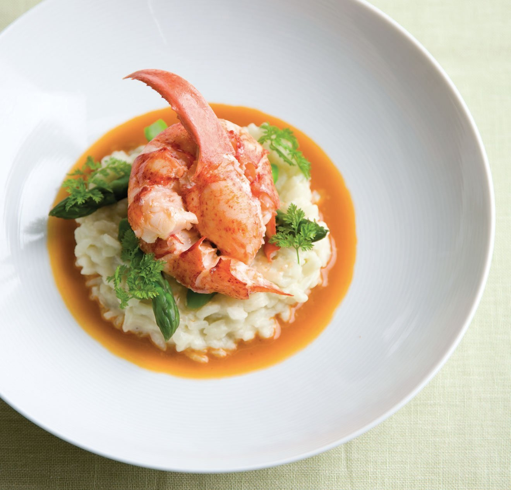
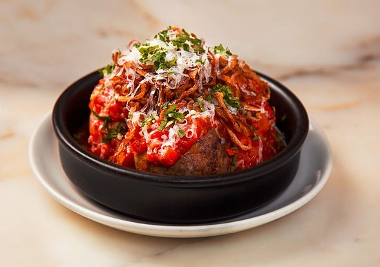
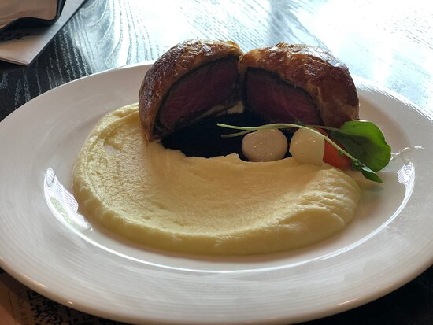
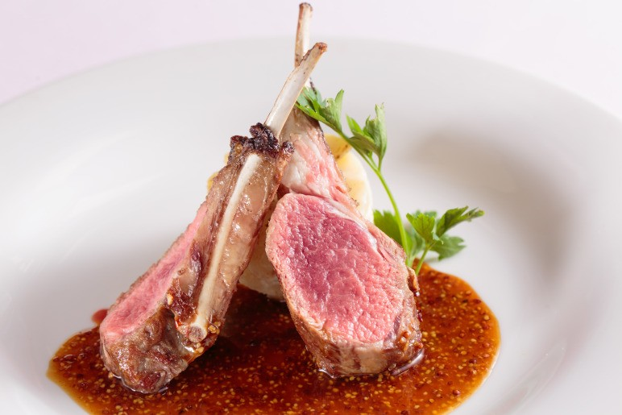
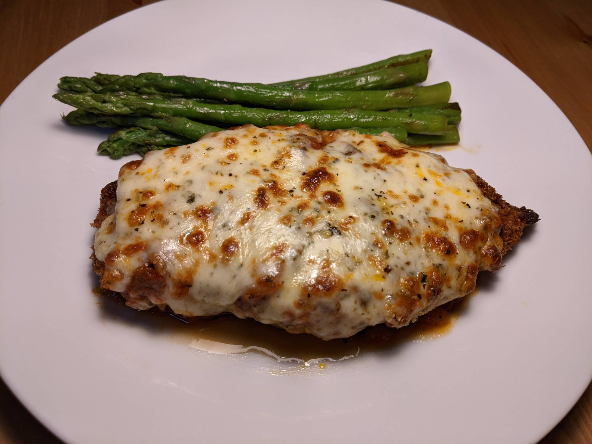
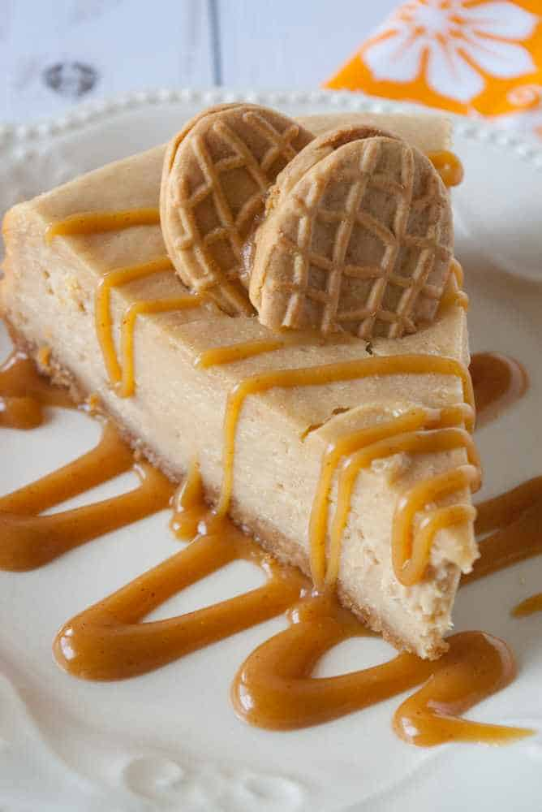
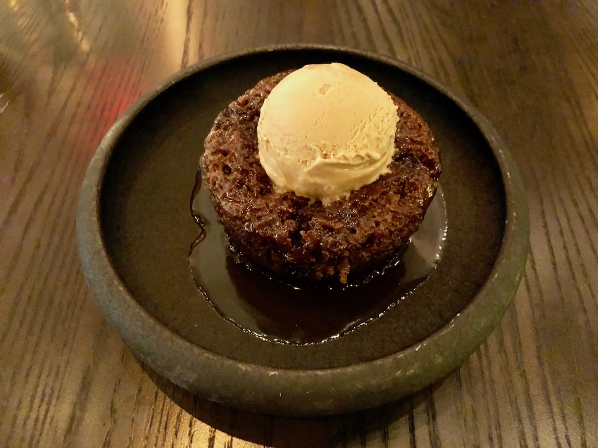

前菜

いせえび雑炊 $14.50
いせえび雑炊は、特殊の風味で有名で、世界中の客様から愛されています。
さらに、これはあらゆる種類の食事に最適な前菜です

南瓜スープ $11.50
南瓜スープは、メインコースに入る前に食欲を刺激するのに役立つ素晴らしい前菜です

和牛のミートボール $10.50
和牛のミートボールは和牛を主成分としています。また、料理を作るにはスローローストディソース、ポレンタクルトン、パルメザンチーズ、バジルが必要です
メインコース

サクサクの皮鮭 $59.20
準備に約10分かかり、どんなおかずにもぴったり合うシンプルで絶妙なサーモン。この焼き鮭は簡単に作ることができ、5つ星レストランで食事をしているような気分になります

フィレミニョン $41.50
フィレミニョンは、フォークの柔らかな食感とマイルドな味わいのエレガントなステーキです。特別な日のために選ぶステーキです。印象的なステーキ!

子羊のロースト $46.50
骨付きのままオーブンでじっくりローストした仔羊は、ワインにピッタリ。特別な日のメインディッシュにどうぞ。

チキンパルメザン $52.50
日本のチキンカツのほんのり甘くて超カリカリのスタイルは、イタリア系アメリカ人の古典的なチキンパルメザンの完璧なベースです。濃厚でうま味が豊富な醤油がピリッとしたトマトソースをバックアップし、ほとんどの日本のキッチンに含まれている、しばしば無視されている魚のグリルは、チーズを泡立つ黄金色に焼くのに最適なツールです。白ご飯の上に、またはパスタやガーリックブレッドを添えて出されるこの料理は、世界最高の快適さです
デザート

ピーナッツバターのチーズケーキ $8.50
チョコレートピーナッツバター愛好家、このチーズケーキはあなたのためです

プリン $8.50
スペキュラース（ベルギーのスパイスクッキー）アイスクリームをトッピングした、しっとりとしたスポンジケーキは甘くて退廃的です。あなたが聞いたことがないかもしれないこの楽しい英国のデザートは完璧な食事に完璧に近いです